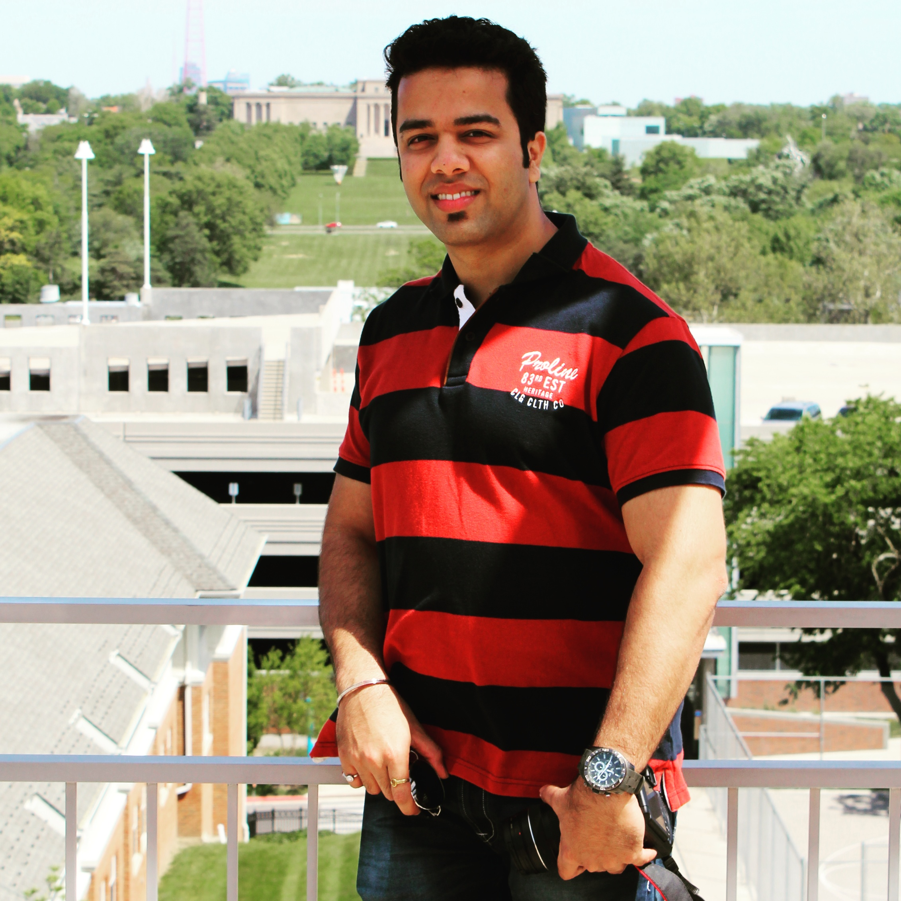

Mandar D Sawant
Graduate Student at UMKC

3621, Gillham Road, Apt #29 Kansas City, MO-64111.
Profile
Detail-oriented IT professional with one and half years of experience as a IT support specialist and systems/network technician.
Skilled at operating in a wide range of platforms. Excellent written and oral communication skills; capable of explaining complex software issues in easy-to-understand terms.
Education
- Master Of Science in Electrical Engineering
- Bachelor of Engineering in Electronics Engineering
Work History
- IT Engineer- Sutherland Global Services Ltd.
- Electronics Engineer- Ajay Engineering Works
- Bhawani Traders- Senior Assistant Support
Skillset
- Hard working
- Great Physical Strength
- Critical thinking
- Lightsaber Duels
- Team management & Leadership sills
- Time oriented
- Capable of delievering quick solutions to marketing troubles
- Planning and organizing skills
Projects
- BE project- Mobile jammer using energy harvesting
During working Networking device which uses RF waves as a component always loses some amount of energy during its working, our project intends to taps this energy which gets lost to the environment and utilize it for running our devices efficiently. Our project focuses on piezo and RF waves as its source of energy generation. This could be the best source for future clean green in order to run our applications.
- Diploma project- RPM measurement using Microcontroller
In industry of power electronics, we are suing different motors. These motors can be effectively run, measure and control by the microcontroller AT89C2051 IC and helps to reduce complexity effectively.